Customer Service Portal¶
Explore full details for each individual customer and their referral journey, manage their rewards and deliver excellent customer service.
Overview¶
Logging In
Once you are logged into your Talkable account, navigate to the Customer Service Portal in the top navigation.
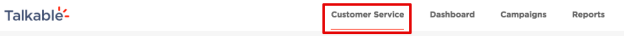Logging In
Navigating to the Customer Service Portal
The Customer Service Portal provides a simple search box that will allow you to search by 4 criteria:
Advocate email: the email of the user who shared with their Friend.
Friend email: the email of the user who received a share email.
Friend order number: the order number of Friend purchase.
Coupon code: the single-use coupon code that the Friend applied during checkout.
Example Customer Service Portal post login:
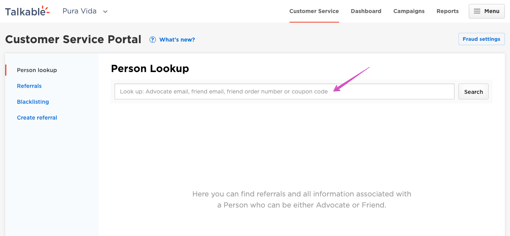Terminology¶
Referral
This is a connection between an Advocate (who invites) and a Friend who completed a referral purchase from the Advocate’s invite (a share). A referral will not be created unless the following 3 pieces are known: Advocate Email, Friend Email, and a Purchase made by a Referred Friend. Each referral is passed through several fraud checks (configured inside Fraud Settings). As a result of the fraud checks each referral status can be:
In progress: Talkable referral engine is processing the referral. Such action usually takes less than a second so it is highly unlikely that you will see this status. No rewards are issued at this point.
Pending: a referral is pending approval. Talkable referral engine can either approve referrals automatically with some delay (optionally) or leave this decision to the user (manual, not recommended as it leads to backlogged referrals). Thus, if the referral fraud checks were passed successfully each referral stays in Pending status until they are approved automatically based on the auto-approval delay configuration (configured inside Fraud Settings). No rewards are issued at this point.
Flagged: due to having many different options to configure referral fraud checks, it is not always possible to set up automatic resolution for each referral. For such cases, you may want to Flag referrals that are in a so called grey area, where the chance of fraud is around 50% and it is impossible to make the decision automatically. All flagged referrals are added to a queue for manual resolution and can be accessed inside CSP → Referrals. No rewards are issued at this point.
Approved: this is a valid referral status which either gets set by the Talkable referral engine with automatic approval or by a user in case of manual resolution. Flagged referrals can also turn to approved since they are resolved manually. All rewards associated with the referral are then passed to the next stage to verify if they can be issued.
Voided: this status is set by a user manually if they decide a referral is invalid and there should be no rewards issued as a result. Only pending and flagged referrals can be voided. Talkable referral engine cannot set this status automatically. All rewards associated with the referral are getting blocked as a result.
Blocked: when some fraud checks are failed Talkable referral engine blocks the referral immediately. All rewards associated with the referral are getting blocked as a result.
Unblocked: this status gets set manually by a user if they decide to approve the referral in case it was blocked automatically (due to some fraud checks failed) but the user thinks it is a valid referral after checking it manually. All rewards associated with the referral are then passed to the next stage to verify if they can be issued.
Reward
This is what the person gets as a result of some action (incentive). Available reward statuses:
Pending: the reward is awaiting referral approval. The referral can either be approved manually or automatically, depending on your configuration.
Waiting for coupon: there are not enough coupons left to pay the reward. The reward will remain in a ‘waiting’ status until more coupons will be uploaded into the associated coupon list.
Given: the reward was paid to the person but Talkable does not have information as to whether it was used or not. Most likely it was not yet used.
Blocked/No reward: there was no reward created either because the associated referral was blocked according to Fraud Settings or because of other reasons: incentive criteria has blocked it, or the person was blacklisted.
Use case #1: Where do I find referrals?¶
1.1 Person Lookup
When a customer calls in, often their first question is: “I’ve referred my Friend but haven’t received my reward.”
The first step is to check to see if the referral exists in our system, which can be done simply by entering Advocate or Friend’s email inside Person Lookup.
In this example Stephanie (Advocate), stephanie***@ganleywestside.com, has called in to check on the status of her
reward for referring her Friend Levi *****levi@yahoo.com.
Here are the steps we’re going to take:
Enter in Stephanie’s email address and press ‘Search’.
Scroll down and see if we see a referral for her Friend Levi.
See if the reward has qualified, when it qualified, and if she should have received an email.
(After entering in Stephanie’s email the screen populates with information associated with her email address.)
1.2 Referral details
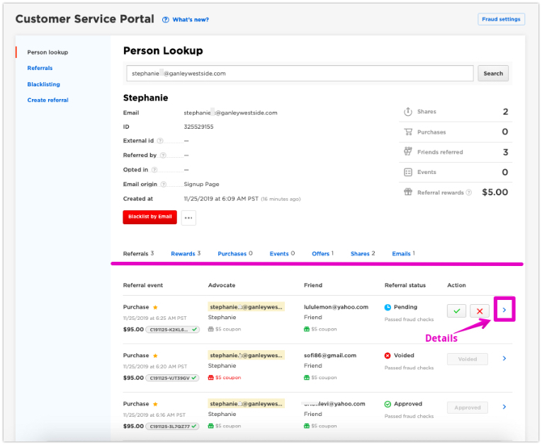(Notice that the screen is divided into 2 main sections. The bottom section has 7 tabs referencing additional sections. We’ll get to those later. For now, we’re interested in “Referrals” and want to scroll down to find Levi, and see what’s happening with that referral. Click on “Details”.)
Here’s a closeup on Levi’s record:
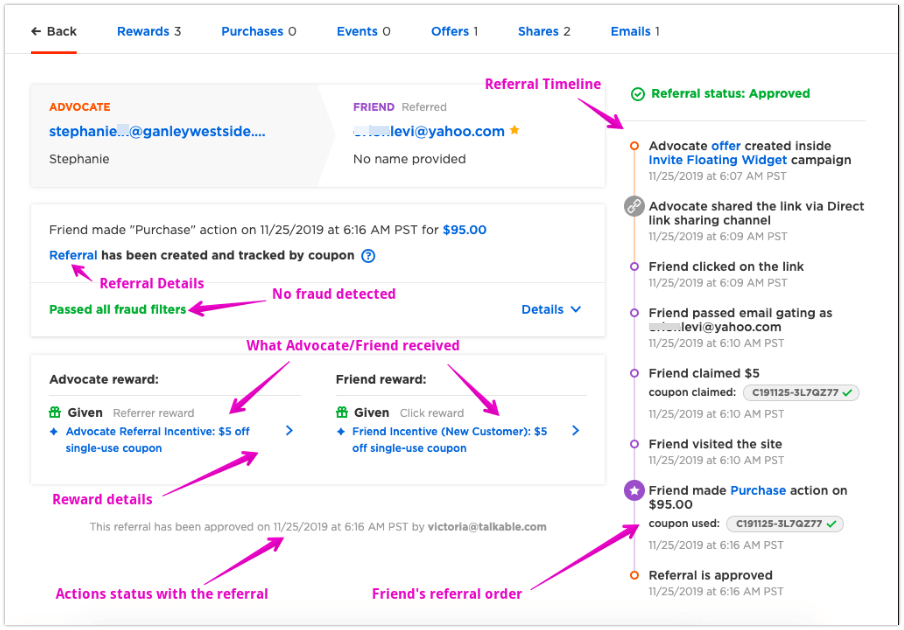What we discovered: the referral is valid because there was no fraud detected, meaning that Stephanie and Levi are different people. We can also see that Levi used the coupon code at checkout.
Let’s also expand fraud filters section to check the details:
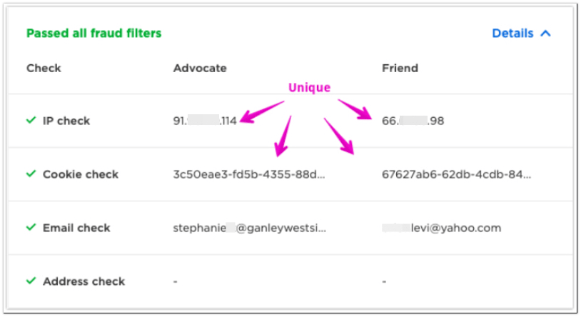This looks like a valid referral. Let’s move on to Use case #2.
Use case #2: Where is Advocate reward?¶
Advocates will receive an email with their reward for each qualified Friend they refer. In most cases this email will contain a coupon or gift card code that the Advocate can redeem. In order to check on the status of a particular reward, all we have to do is see if the email has been sent to the Advocate.
Here are the steps we will take:
Enter in Stephanie’s email (if not entered already).
Navigate to “Emails” tab.
Look for “Advocate Reward Paid Email”.
Click on Details.
Provide information to the customer from the details page.
2.1 Email delivery
Navigate to ‘Emails’ tab after entering in Stephanie’s email. The “Emails” tab shows all emails sent to the Advocate about the referral program. Look for the “Advocate Reward Paid Email”. There may be multiple emails like this.
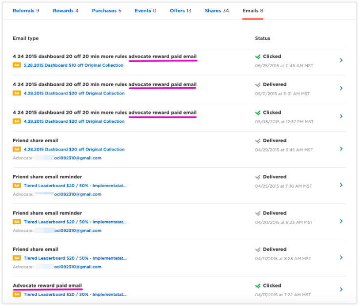To ensure we find the desired email we need to go back to the referral details and see a referral approval date:
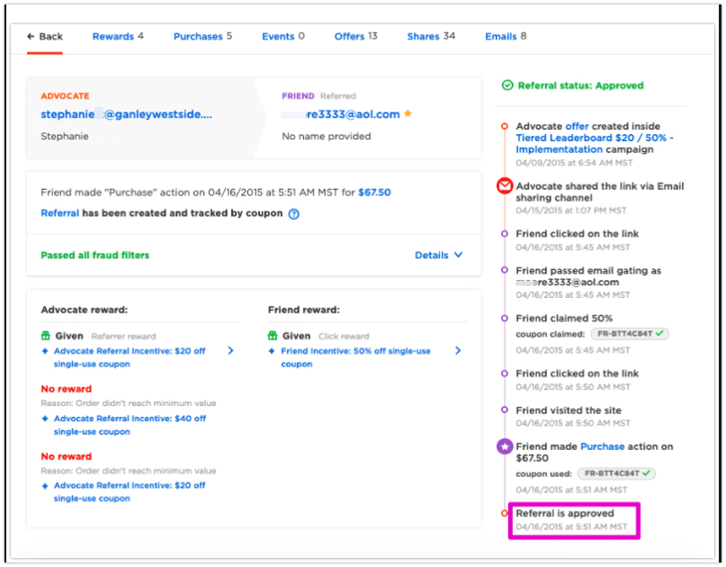Navigating back to “Emails” tab. Look for “Advocate reward paid email” from the same campaign that the referral dated 04/16/2015 or a few days later. There is a suitable email with status ‘Clicked’ 04/17/2015:
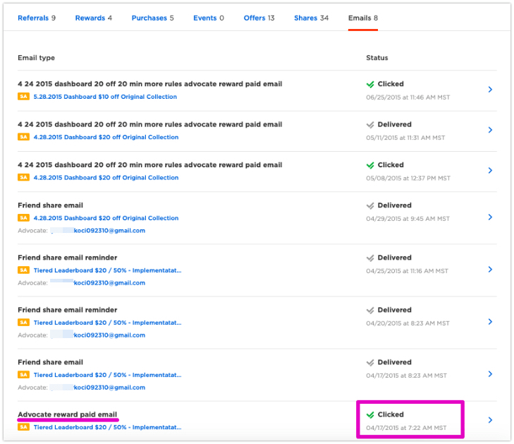Click on ‘Details’ and compare the referral created date with the email created date to ensure that we found the desired email:
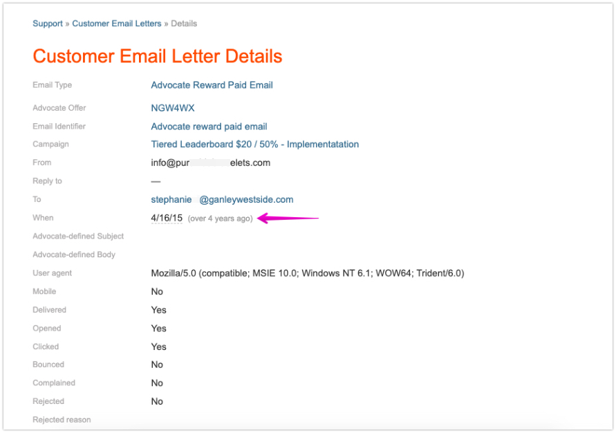In this case we can see the email was delivered and that the Advocate successfully opened the email and clicked through on the CTA inside the email.
There may be cases when the delivered status has a timestamp, however the opened status is blank. It will mean that the recipient has not yet opened the email. In this case you would instruct the user to search their inbox and see if they can find the email. You can also tell them the email address in the “From” field which may help them in their search.
If they still can’t find the email you may click the “Resend now” button on the email ‘Details’ page and the same email will be sent to the recipient email again.
Here is what email statuses mean:
Sent: Talkable was able to compose an email and pass it to the Talkable ESP to prepare for delivery.
Delivered: Talkable ESP was able to send an email to the recipient (Stephanie).
Opened: Stephanie has opened the email.
Clicked: Stephanie has clicked on the CTA inside the email.
Rejected: the email was rejected by some reason.
Use case #3: Who should get the reward?¶
In not all referral cases does Talkable issue a reward. There may be numerous reasons why a reward is not issued to an Advocate or Friend. The easiest way to find out the reward status is by visiting the Referrals tab:
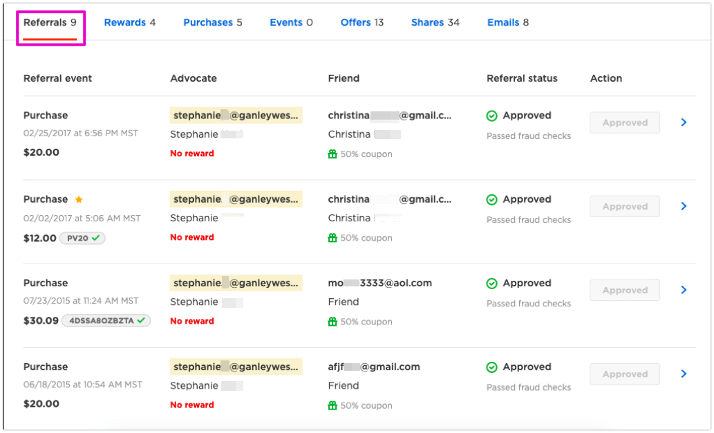Navigating to each referral ‘Details’ page we can find out the status for each reward. Reason near the reward status explains why the reward was not given.
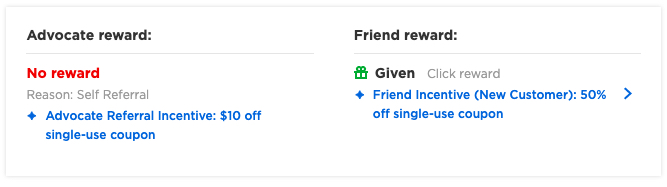Every reward has the following possible statuses:
Pending: the reward is awaiting referral approval. The referral can either be approved manually or automatically, depending on your configuration. If the referral status is Pending you may wait until the referral auto-approval happens. Otherwise please press “Void” or “Approve” button in the referral actions section, to either block or issue the reward.
Waiting for coupon: there are not enough coupons left to pay the reward. Click on the reward link → Incentive type → Remember the coupon list chosen → Manage coupon lists → Find the desired coupon list and press “Add coupons”.
Given: the reward was paid to the person but Talkable does not have information whether it was used or not. Most likely it was not yet used.
Voided: the reward was voided because the referral was voided by a user manually.
Blocked/No reward: the reward was blocked either because the associated referral was blocked according to Fraud Settings or because of other reasons: incentive criteria has blocked it, or the person was blacklisted.
(All incentive criteria are defined in Campaign Rules → Incentives. See reward criteria section.)
Here are some common incentive criteria block reasons:
Friend didn’t meet minimum purchase requirement. On a screenshot above Friend’s referral purchase subtotal should be over $20. The incentive criteria will block Advocate’s reward in case Friend’s order subtotal will be less (post discount).
Friend’s offer was expired. Based on Campaign Rules setup, Friend’s offer may expire after a certain period of time. Most likely the Friend received their coupon code by visiting a share link and then decided to save their discount for later. If Friend makes a purchase after their offer expires (using that coupon) the Advocate will not get a reward.
Friend is not a new customer. Friend was an existing customer (> 1 purchase tracked) while making their referral purchase, however the incentive configuration only allows referring new customers.
Friend has already been referred. The Advocate has already referred this Friend before but the incentive configuration only allows referring the same Friend only once.
Other reasons why a reward can be blocked (not incentive related):
Advocate has reached maximum rewards. This is because Talkable has set a threshold for the maximum number of rewards that an Advocate can receive. The Friend may be rewarded in this case (as in the example above), but not the Advocate.
The associated referral was blocked/voided for self/cross referral.
3.1 Handling customer inquiries
Here is how to detect self referrals in case you’ve got an email/call from a customer:
Enter the customer’s email address in the Person Lookup.
Review the “Referrals” tab and look for a “self-referral” alert:
3. Inspect the customer’s email address to see if it’s the same or similar to the Friends; you can also inspect inside the referral details the IP address and cookie to see if they match:
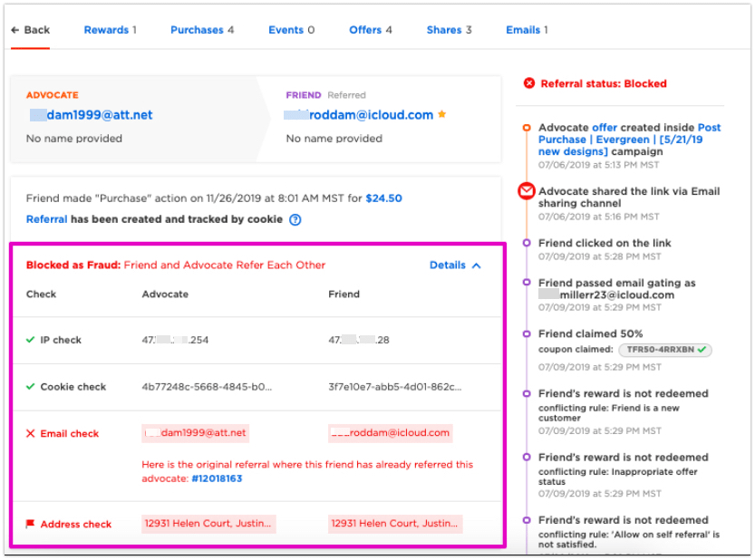4. If it’s not obvious why the customer was flagged for self referral (meaning that none of these three items matched), then you should click “Details” to dive deeper.
5. Inspect to see if any other “blocked reasons” appear. In the below case, we see that not only do the email addresses match, but there was also a matching cookie on the Friend purchase (meaning they used the same browsing session to both share as an Advocate and click on the share link as a Friend), and lastly, there’s a matching combination of IP address and user agent - meaning the Advocate and Friend were using the same device and IP address, in combination.
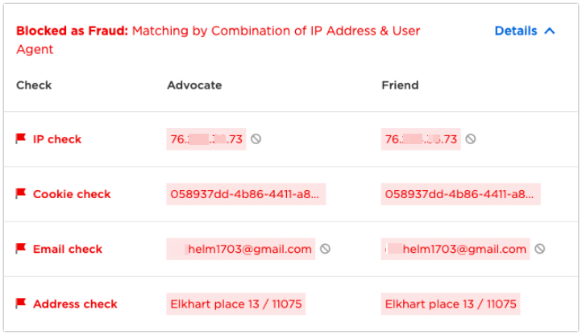3.2 Cross referrals
The last use case is when an Advocate has not received his or her reward due to Cross Referral. Cross referral occurs when an advocate shares with a Friend who purchases and that same Friend then shares with an Advocate in an attempt to get both the Advocate and Friend rewards.
We identify this in the same way as described above.
Use case #4: Did my Friend get an email?¶
To investigate did an Advocate’s Friend get an email, we’ll need to have their Friends email. All Advocate shares are located inside “Shares” tab:


In this case we can see that the Friend received the email, opened it, and clicked through.

If the Friend did not open the email you will see 0 in the ‘Friends’ tab.
There also can be a case when an Advocate share has several Friends and clicks:

‘Friends’ column displays the number of Friend offers created per each share. ‘Clicks’ column displays the number of Friend clicks per each share. The numbers may be different in case:
Multiple Friend offers may be created if one Friend forwarded their email to another person.
One individual Friend may click multiple times on the same share link.
Note: for email shares Friend offers are created upon each share while for other sharing channels only whenever Friends click on the share link.
Clicking on details opens “Friend Offers” page where we can see all Friend offers generated in a scope of the particular Advocate share.
The same logic works for other sharing channels such as ‘Direct link’, ‘Facebook’, ‘SMS’ etc.
4.1 Friend was blocked for self-referral
Again, the above only references valid cases where the Friend should have in fact received a reward. The alternative cases are listed below where Talkable identified that a Friend may be trying to game the system and therefore did NOT allow them to use the Friend coupon code.
The most common case is that a Friend was blocked/flagged for self-referral. As with the case of the Advocate, we find that the most vocal customers are typically trying to game the system.
To validate this use case simply lookup for the Friend’s email address and browse through referrals to see flagged/blocked ones. We see that the blocked reason in this case is “Matching email”, in some cases it may be “Similar email match”:

Use case #5: Blacklisting a user¶
Occasionally you may want to blacklist a user or a group of users from participating in the program. This may happen if you discover that a user is posting links to a discounting coupon site or posting without your permission on social media pages.
To blacklist a user, first navigate to the “Blacklisting” section of the Customer Service Portal:
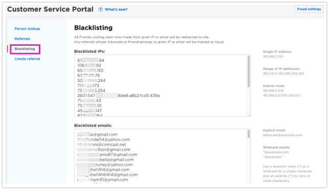5.1 Adding a user to be blacklisted
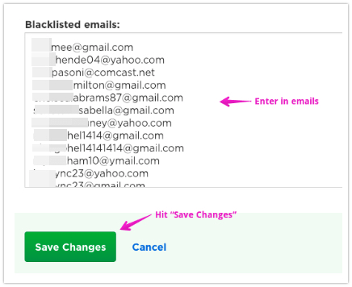(We support adding users to a blacklist using two methods, by Email or by IP address. To add an email to the blacklist, just enter the email into the “Blacklisted emails” field and press “Save Changes”. Note that emails are not separated by comma, but are new line delimited.)
We also have additional features that enable you to disqualify more IP addresses or emails.
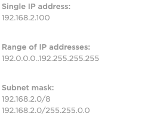(You can add a single IP address or an entire range of IP addresses.)
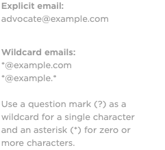(We can also blacklist by subnet mask - in this case please ask a Talkable rep for more details.)
Email blacklisting is easy! Just enter the email address into the list and hit “Save Changes”.
Notice we support wildcard so if you notice a pattern of abuse you can explicitly disallow users who match that email address as well.
5.2 How do I UnBlacklist a user?
If you realize that you made a mistake in Blacklisting a user who should actually be receiving rewards, all you have to do to take a user off the blacklist is to delete their email or IP from the list and then hit “Save Changes” again. It’s that easy.
Use case #6: Creating a referral for an Advocate¶
This example shows how to create a referral reward for some Advocate. A common customer service inquiry comes from an Advocate who is wondering why they didn’t receive their referral reward. This example shows you how to manually create a reward for this Advocate.
6.1 Gathering the info
In order to create a referral you need to know:
The Advocate’s email address.
Some campaign the Advocate participated in.
To find (2) Advocate’s participating campaign:
Enter the Advocate’s email address into the Person Lookup.
Navigate to “Offers” tab to see the participating campaigns.
Remember the Advocate’s Email and Campaign for Part 2.
6.2 Creating the referral
Now that you know the Advocate and a campaign they have participated in, you are now able to create a referral with this information:
Visit “Create referral” section.
Paste Advocate email into the “Advocate’s email” field.
Provide some valid order subtotal (there is a chance the reward may be blocked due to low subtotal amount, you can either set it pretty high or check campaign rules → Incentives → Advocate referral incentive criteria beforehand).
Choose the campaign. You can paste its name from the step 6.1 in the campaigns search bar and the requested campaign will appear immediately.
Press “Create Referral” button.
6.3 Viewing the results of the manually created referral
After creating the referral manually you will be taken to the newly created referral details page:
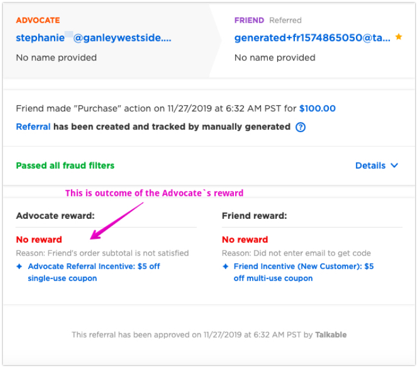Advocate reward may be blocked due to incentive criteria, make sure to check the Advocate’s reward status as shown on the screenshot above.